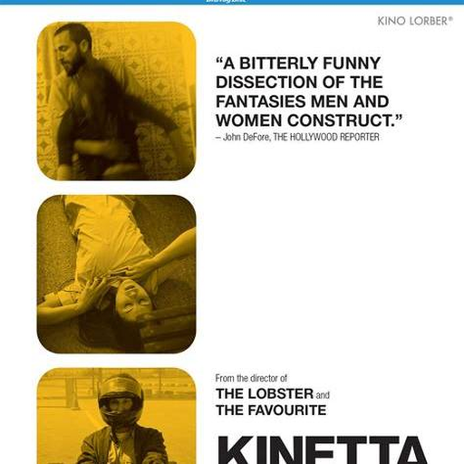

Kinetta
Cartel de distribución de Kino Lorber
- Año
- 2005
- País / mercado
- Estados Unidos — material de distribución de Kino Lorber para el estreno estadounidense posterior de la película.
- Estudio / distribuidor
- Kino Lorber
- Tipografía
- Sans serif / display
- Características visuales
- Color dominante: amarillo ocre, blanco y negro. Tipo de imagen: fotografía / collage. Composición: asimétrica, modular y minimalista. Presencia humana: grupo, distribuido en fotografías separadas. Recursos visuales principales: repetición, recorte, retícula modular, tratamiento monocromático/duotono y esquinas redondeadas.
- Fuente
- Kino Lorber — Kinetta (página oficial con “Hi-Res Poster”)